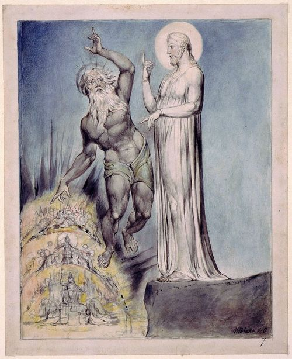

Jesus, the guy who lived a life so full of love that it got him killed,
— even he was tempted.
But have you considered what it was that tempted him? There is much to learn from taking a closer look.
Jesus was tempted to do the wrong kind of good. He was not tempted to do anything overtly evil. It's an incredible story to contemplate as we take stock of our own lives this Lenten season.
Around The Table we have been engaging with the season of Lent as a season for reorientation. For reflecting on the world's undertow, reevaluating our relationships and shared humanity and returning to our Source, our Creator, the Sustainer of our path through life.
Have you ever found yourself in a place where the “good” you were tempted to accomplish was guilted, prideful, shame-induced, duty-bound, or flat out false? Have you ever been distracted by perfectly okay options for “doing good” in your world only to recognize after wasted time and energy that you’re exhausted and unfulfilled?
“The problem is, there is a world of difference between doing good, and doing the specific good you are called to do.” - Eric Elnes, Gifts of the Dark Wood.
In Jesus’ case, he was tempted by three false-goods. First, he was tempted to turn stones into bread. Imagine! In a region of the world with rocks aplenty, bread would never run out. Jesus' ministry based on feeding himself, his disciples and literally anyone who was hungry would have thrived. A world without hunger. It would have rocketed Jesus to divine status immediately, and it sure would have helped a whole lot of worthy, hungry folks.
Jesus was also tempted with ruling the world. I mean, the power to be in charge and control the political climate? Imagine! (It’s not too far a temptation from history’s current political-sphere. I wish I had a magic wand to rid the world of fear-mongering hate-speeching political idiots in favor of world peace and quiet.) Handing out resources wherever needed, dishing out world peace, eliminating war and oppression. Come on! That is a lot of good Jesus could have accomplished.

William Blake (English poet, painter and printmaker, 1757-1827) "The Second Temptation"
Rendering a pious-looking man standing next to Jesus pointing up to the heavens and down to the world's cities, Blake's commentary on Jesus' temptation is poignant. Jesus calmly mimics the Tempter, pointing in the same two directions. Without context it's not immediately obvious the man to Jesus' left is the Adversary, sent to tempt Jesus. No fangs or horns or blazing pitchforks - just a respectable looking pious guy. Blake made a good point: Jesus' Adversary was shrewd - tempting Jesus to the wrong good.
The Adversary also tempted Jesus with performing impressive miracles to prove he was the Christ (the Messiah or Savior). Converting the world would have been so simple - it would eliminate the need for faith. Just imagine! If Jesus could throw himself off the temple roof and survive, doubt would a thing of the past. Or would it?
None of these things were remotely close to the good life to which Jesus was called.
Perhaps temptation to do the wrong good turns out to be a gift, because it forces us beyond the numbness of doing what we’re told, doing what seems easiest, doing good things for imperfect reasons. To be fully alive in our own skin and bones requires saying yes to doing the kind of good truest to our souls, and to God’s good intentions in this world.
“Part of Jesus’ calling was to live more fully into his human identity than anyone else had ever done before.” - Eric Elnes, Gifts of the Dark Wood.
Here is the thing with the temptation to do the wrong good: its exhausting. Utterly and completely soul-suckinly draining. There ain’t no creativity, rest, or solace. Do you know what I’m talking about? The lights might be bright, the path wide and the way clearly marked when you’re tempted to do the wrong good. But if it isn’t the good you’re called to do in this world, you’ll find yourself undone, or shriveling inside: far less than human.
What if you were able to live a life free from shame, guilt, duty, pride and falsity? What if you were able to navigate your path by clear intuition and deeper imagination? Life will never be free from temptations of any kind: good or bad, but you can life a free life. Free to be fully and completely you. Free from the numbness of blindly doing the good you think you’re supposed to be doing. Free to do the good you were created to do.
The solution for exhaustion isn’t a long vacation. It’s wholeheartedness.
We see this wholeheartedness in Jesus’ response to and resistance of the Adversary.
“Humans do not live by bread alone, but by every word that comes from the mouth of God.”
- Luke 3:14
- Luke 3:14
I think part of what Jesus was getting at in his resistance is that our dependency on bread will never satisfy the hungers of our soul: only connection with the Divine can do that. Connection with the Divine is not cultivated by doing bigger and better and gooder things (I know gooder is not a word). It is cultivated by getting in radical touch with who we are, who God is and how we can channel God’s whole-hearted love to ourselves, our neighbors and our world.
That’s how Jesus walked out of the desert of temptation to do the wrong good. He left clearer than ever on what it was he was called to do; and precisely what he was not called to do. He left more deeply connected with God and more able to cultivate a life of becoming more fully alive.
The path for soulful skeptics and other wandering folks through the dark woods is rough and rocky and hilly. It contains temptations to do the wrong good. It isn’t clearly marked or well-lit or cushy. It is navigated by quiet, sincere and imaginative discernment.
Choosing between one good and another good helps us to define who we are in the world. You’ll know when you’ve chosen the wrong good. You’ll beexhausted and hangry. You’ll be duller and less alive.
Jesus wasn’t called to end world hunger.
Jesus wasn’t called to exercise world power.
Jesus wasn’t called to grant the world absolute certainty and rid the world of a need for faith.
None of those were the central good Jesus was called to do.
What is the good you are called to do? Just imagine!
When you discover this good, you'll be far less spiritually hangry; and you'll be better able to help others find an answer to their own spiritual hanger.
Get out there and do the good you are called to. Not someone else’s good. Not the good that seems best. Your good. The good that leads you home, and brings you more fully alive.
If you need some help sorting out what that good is, join us around The Table where a bunch of others are figuring it out together - Sundays at 6pm in downtown Casper.
Here’s to the temptation to do the clearest good,
that we may live wholeheartedly,
Pastor Libby* Special thanks to Pastor Eric Elnes and his book Gifts of the Dark Wood, chapter 6 for so helpfully articulating The Gift of Temptation. His great descriptions influenced the writing of this blog.